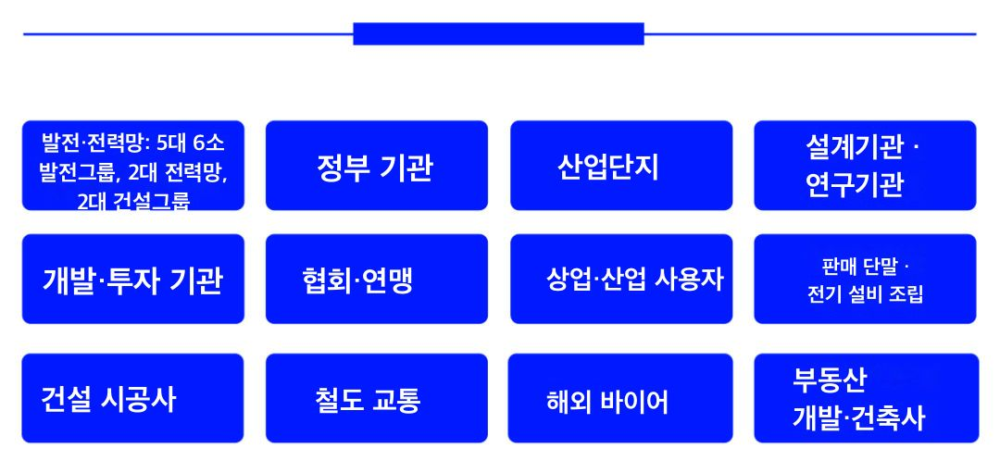
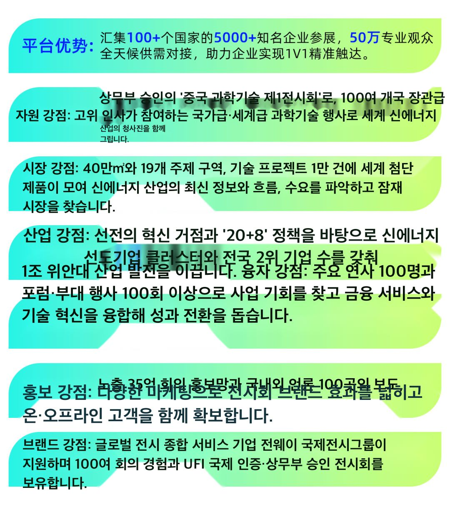
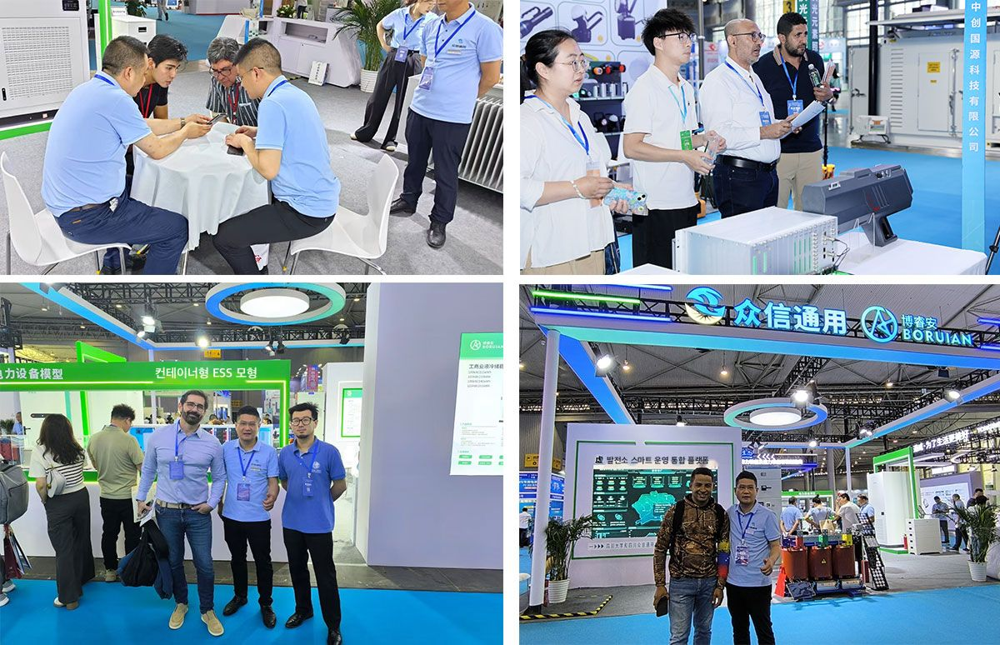
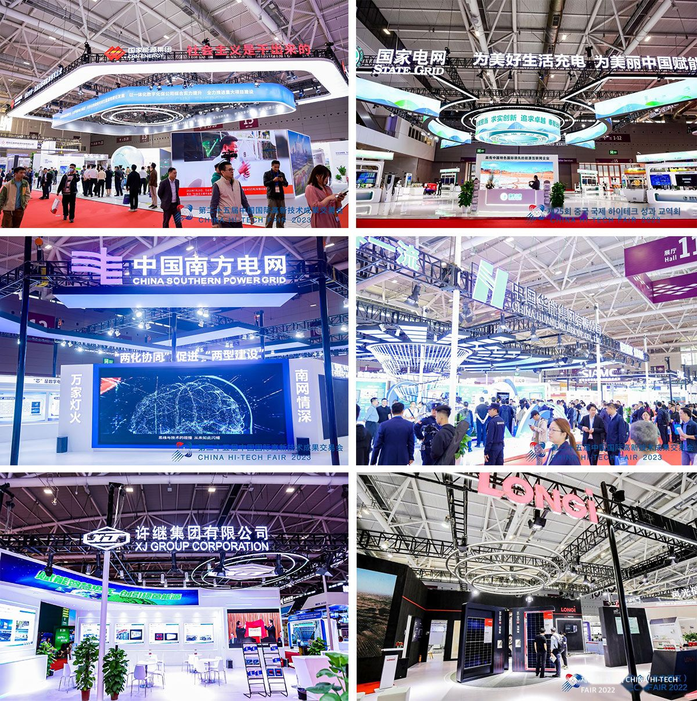

스마트 전력·디지털 에너지전

스마트 전력·디지털 에너지 전시구역
2026년 11월 26~28일
선전 국제회의전시센터(바오안)
전시 소개
과학기술 혁신은 신질 생산력을 키우는 핵심 동력이자 탄소중립 목표의 전략적 지렛대입니다. 신형 에너지·전력 시스템 구축을 가속하기 위해, 국무원 승인을 받아 선전시 인민정부가 주최하는 제28회 고교회가 2026년 11월 26~28일 선전 국제회의전시센터에서 열립니다. 전시면적은 약 40만㎡이며 100여 개 국가·지역의 유명 기업과 국제기구 5,000여 곳이 참가할 예정입니다.
스마트 전력·디지털 에너지 구역은 이번 고교회의 중점 분야입니다. 세계 혁신 도시 선전의 강점을 바탕으로 디지털 에너지 기술 혁신과 청정에너지 고급 장비 제조의 거점을 만들고 있습니다. 에너지 핵심 장비 개발과 보급에 초점을 맞춰 전 산업체인의 신제품, 신설비, 신기술, 서비스와 솔루션을 선보이며, 수력·풍력·태양광·저장·수소 등 청정에너지 생태계의 융합을 촉진합니다.
전시 내용
| 원스톱 송배전 설비 | 전력 IoT와 전력 데이터 | 전력·전기공 제조 설비 |
| 스마트 점검·비상 설비 | 전력망 급전과 제어 | 전력 자동화 |
| 에너지저장 설비와 배터리 | 스마트 수력, 양수발전 | 풍력발전 설비 |
| 태양광 소재, 전지, 모듈 | 신에너지 계통연계 송배전 시스템 | 전력공사 차량·장비 |
| 신형 전력 시스템 | 에너지 디지털화 | 종합 에너지 서비스 |
| 충전기와 충전·교환 설비 | 초급속 충전과 태양광·저장·충방전 | 데이터센터 인프라 |
전문 관람객

7대 특징

국제 구매단

지난 행사
